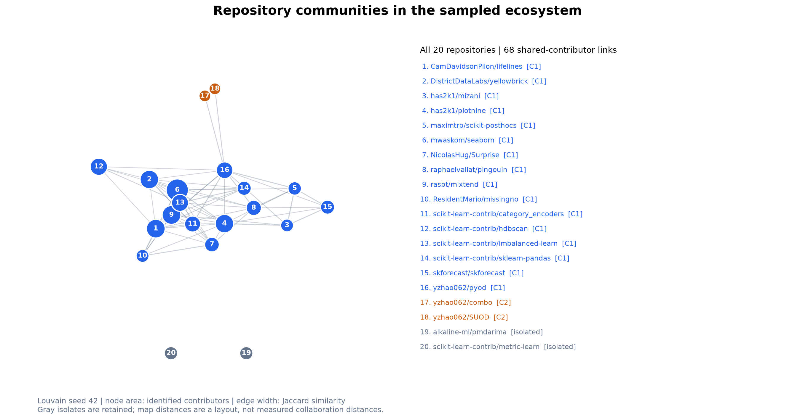
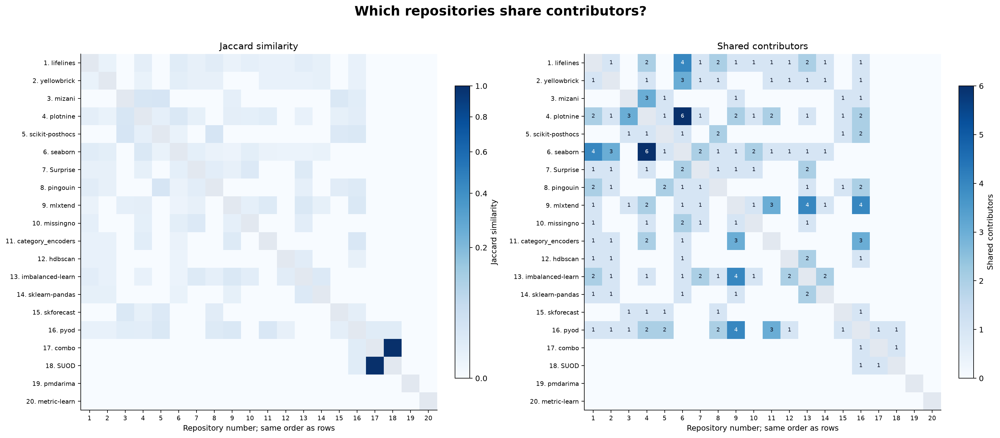
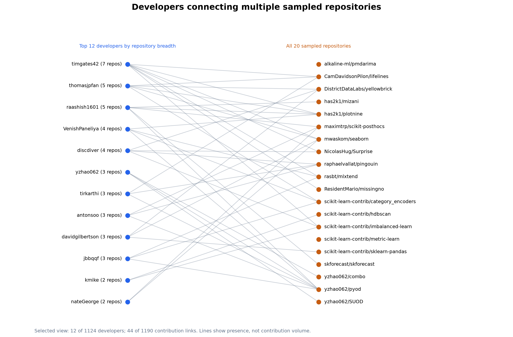
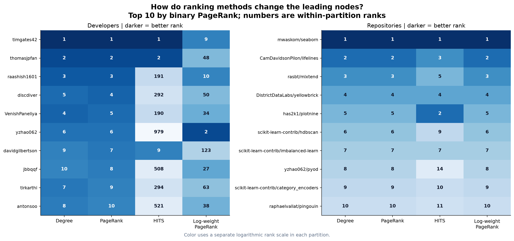
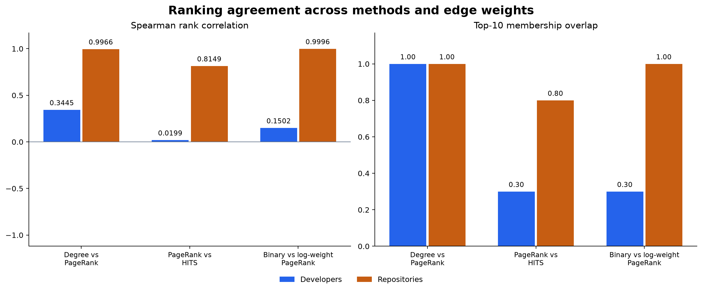
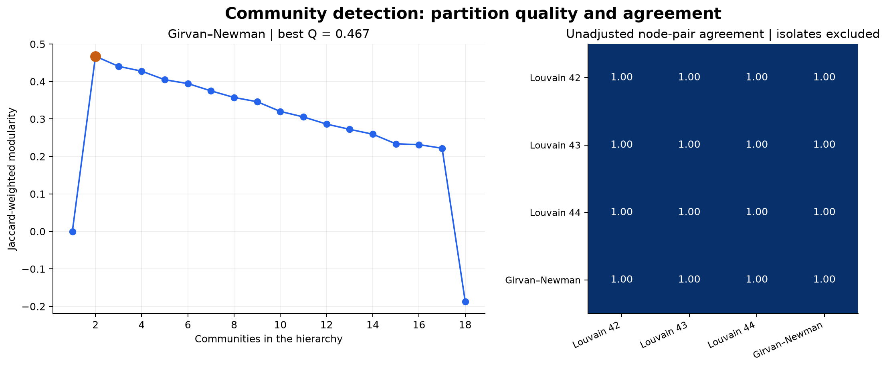
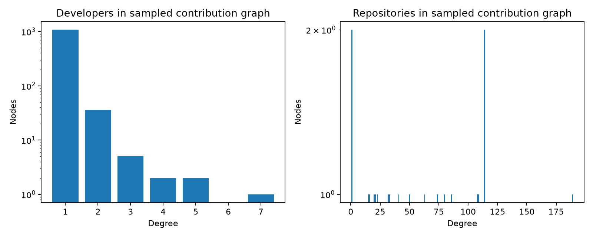
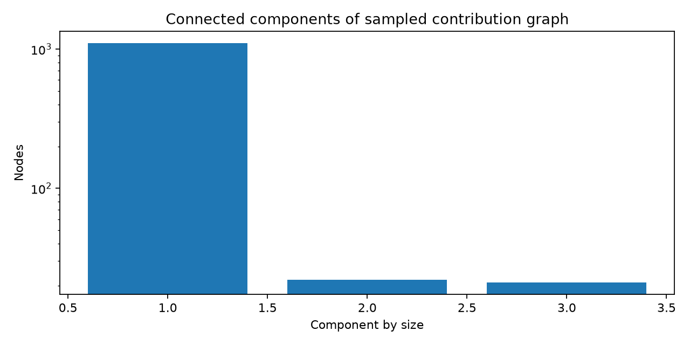
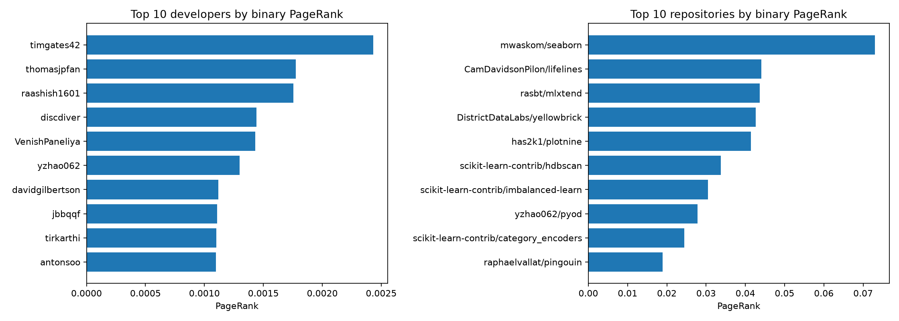

Frozen sample analysis. Open a PNG at full resolution or use SVG for slides. Selected subgraphs and internal community metrics are labeled in each figure.
All repositories; colors show Louvain seed 42 communities. Gray nodes have no shared contributors. Node area reflects contributor count; edge width reflects Jaccard similarity.

All repository pairs, ordered by community. The diagonal is intentionally masked. Left: Jaccard similarity with a square-root color scale. Right: shared contributor counts.

Only the 12 developers with the broadest participation are selected; all repositories remain visible. Lines represent contribution presence, not commit volume.

Top 10 nodes by binary PageRank in each partition. Cells give actual ranks; darker means a better rank. Each partition uses its own logarithmic color scale.

Spearman correlation and top-10 membership overlap compare degree, HITS, and contribution-weighted PageRank with binary PageRank. Undefined comparisons are marked N/A.

Girvan–Newman hierarchy scores and agreement across methods and seeds. Projection isolates are excluded. Pair agreement is unadjusted, not ground-truth accuracy.

Complete sampled bipartite graph; both node partitions are shown.

Component sizes in the complete sampled bipartite graph.

The ten highest PageRank nodes in each partition.
